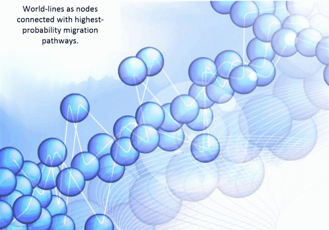
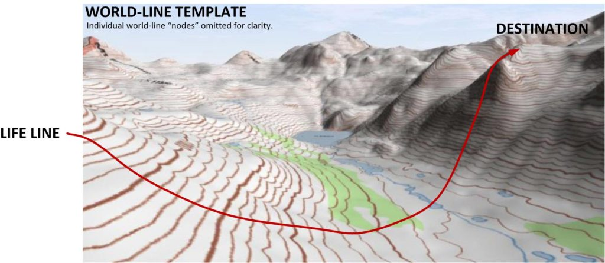
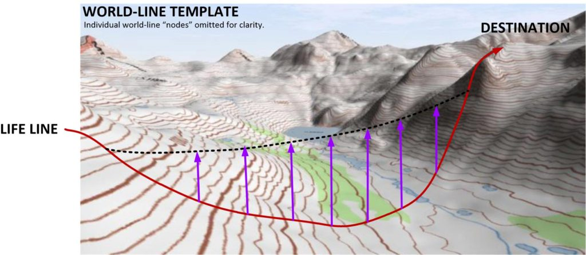
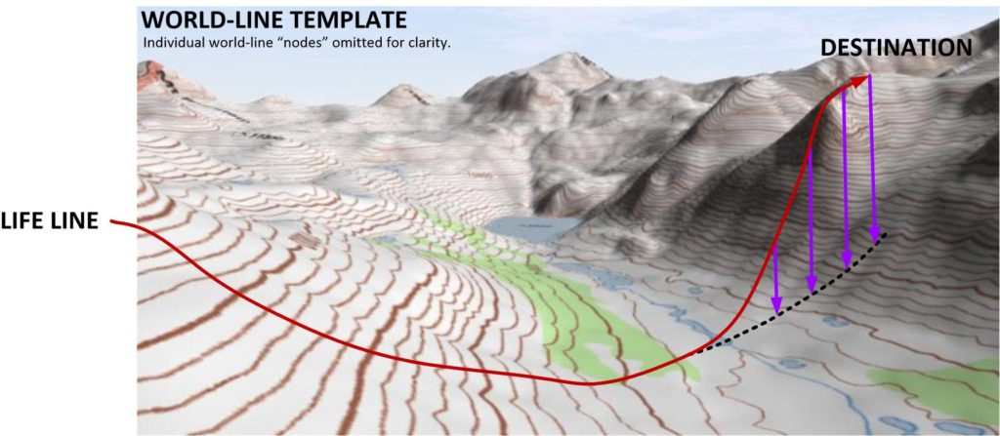
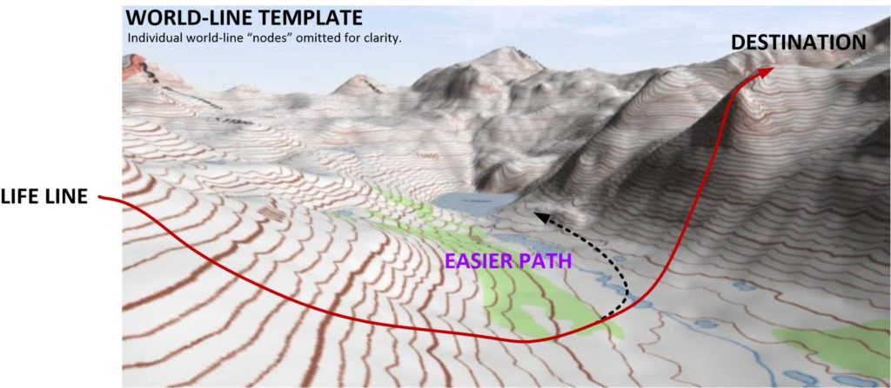
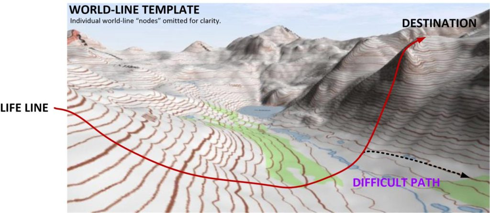

This article discusses “mapping the MWI”. It looks at how it works and how to visualize the multiverse full of a near infinite number of world-lines.
There are many, many variables and world-lines involved that our consciousness experiences and uses to achieve it’s goals and desires. And truly it tends to become mind-boggling trying to sort things out to go from location “A” to location “B”. The easiest way to get around this is to use a map or a device that will enable us to visualize how best to get to our destination.
In my DIY Dimensional Portal Index, I suggest that you take experimental measurements as a function of geography, gravity, and time, and plot the coordinates out in such a way as to develop a mantle-bot set. Then use that as an indicator of where you are and what settings you can change to alter your reality.
When John Titor discussed his vehicular dimensional warping vehicle (found in my John Titor Index) he discussed using sensors to measure gravity displacement. And in that way his ability to travel was locked and limited by the technology that he used.
Well, here we are going to discuss using (or creating) a visualization topographical map for personal prayer affirmation campaigns. These maps are conceptional and do not require you to collect reams and sets of data to map out. Only to use them to help visualize what you are doing, where you are going and what is going on.
The Map
To best map the MWI it would “float” within a three dimensional framework.
As such, it might look something a little like this. With the positions of the world-lines geographically positioned relatively to the pathways as a function of the intrinsic value of the particular world-line.

The path that consciousness takes might be just as well placed on a map of sorts. This map might show nodes and paths where the consciousness might migrate depending on thought manifestation, generation and progression.
.
However, it would not look so much like a cluster of grapes, or bubbles on a foamy sea of bath water. No.
Topographical 3D Map
It turns out that the highest probability pathway forms a kind of sheet or flat surface when plotted in the three dimensions. If you end up plotting everything, you can't make out heads or tails of the map. It's just this one big mess. But, if you plot the pathways that have the greatest probability of travel, it simplifies immensely.
Instead of a cluster of grapes, it would look a little like a mesh or a grid. With the points being world-lines, and the lines connecting the points as the shortest distance to that world-line.
Now, if you take a step away from this “map” of “world-lines” and their lines of “high-probability” consciousness transfer it might start looking a little like this.
Where you would see a “surface” of “highest probability” pathways, with the relative ease of travel and the strength of character needed to traverse affecting the heights and valleys of the apparent surface.

How the world-lines with consciousness migration paths might look when a person takes a larger overview. You will see that the map is not a flat surface, but rather undulates.
.
It forms hills, valleys and “mountains”. This surface is the “geography” of the world-line transition map. Each possible destination world-line would have a different value of “potential”. Which is a potential for the consciousness to move towards it and occupy it.
What the geometry of the map means
To really use map to a point of functionality, we need to actually study it’s attributes..

- Going above the surface indicates a strength of will over the combined strength of inertia of a given world-line. The individual can apply themselves, and exert thought, planning, determination and “grit” to achieve their objectives. When this happens, they are no longer following the “easy path”, but has instead “cut a path” for themselves to follow.

- Going below the surface indicates a weak strength of will and a consciousness being overwhelmed by the inherent inertia of a given world-line. But sometimes the inertia of the situation that surrounds you is too strong and too powerful. It can “pull you under” and overwhelm you.

Additionally…
I am using the “right hand convention” which is arbitrary. If you are “left handed” then you can reverse this convention. This is a visualization technique that relies on the relative comfort that a person, or consciousness feels when they generate thoughts and make decisions.
- Moving to the left upon the mapped surface indicates more freedom of movement upon a given world-line reality. You can control your life on a day to day basis. And in general, the decisions that you will make will be a function of the needs and situations associated with your physical body.

- Moving to the right upon the mapped surface indicates less freedom of movement upon a given world-line reality. Conversely, moving to the right will hamper your ability to move and will become progressively more difficult over time.

Conclusions
There is much that can be said about aspects to these conceptualization maps. Such as how does a slide manifest, and maybe even the idea that you can get off the topological surface. But these maps are visualization aids. No more and no less. Some people don’t need them. But I do.
And other things come into play as well. Such as the idea that the topographical surface isn’t solid like a piece of paper, but rather buoyant like the surface of water. (Which is a very important concept, by the way.) and other things such as why left and right navigation and all the rest.
You need to keep in mind that this is a visualization methodology that you can use within your templates to help navigate the MWI to meet your affirmation prayer campaign goals.
Some examples;
When traveling on my MWI world-line map, I am never overwhelmed and "pulled under" the topography. Instead I avoid those crisis situations well in advance.
Or,
I meter my life-line path over the "hills and valleys" of the topographical world-line template in such as way that I have a minimum of physical distress when I navigate to my objectives.
Phew! So wordy. But you all do understand what the affirmation is saying, and that understanding is a generated thought, and thus a navigation criteria on the MWI.
My Video of the day
I am trying to include a video with each post that I make. This is just a little video of what it is like for me here in China. For those of you who have never visited China you will be surprised as it doesn’t even remotely resemble anything that the “news” says it is.
The “news” is dangerous. Don’t believe any of it.
Overall, most people enjoy this little window into the MM life and lifestyle. And you can turn off the audio is you don’t want to hear my opinions. My latest video was taken last night. I hope you like it. HERE. 131MB. Nice beach bar with some tender music, and fine deep, dark shady shadows.
I also have another one HERE. 166MB. It shows a children’s “rope course”, which of course are banned in the Untied States as too dangerous.